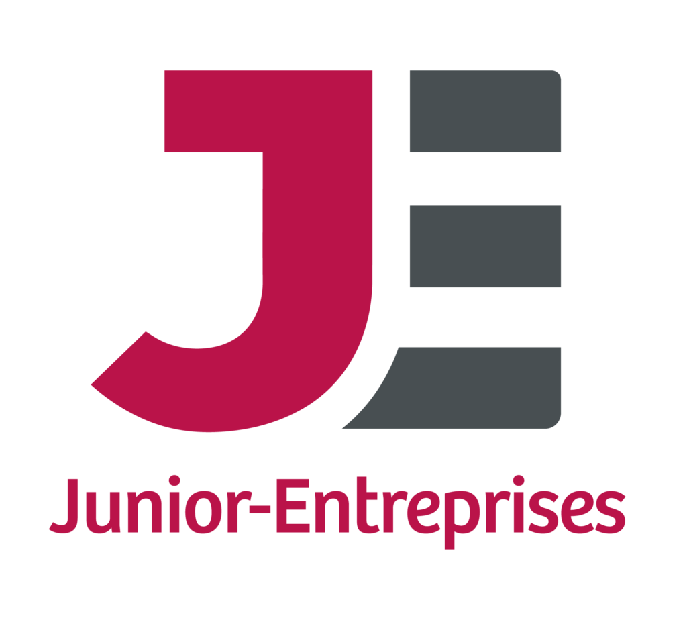

<section id="about" style="padding: 40px;">
    <div class="container">
        <h1 style="text-align: center; margin-bottom: 40px;">Qu'est ce qu'une Junior-Entreprise ?</h1>
        <div>
            <p style="padding: 10px;">
                <b>Les Juniors Entreprises</b> (J.E.) sont des associations de la loi 1901 permettant de
                mettre en relation des organismes privés ou publics avec les talents de demain. Il
                s’agit de structures à vocation économique et pédagogique, mais à but non
                lucratif. Crée en 1969 à l’initiative de 6 J.E., la <b>Confédération Nationale des Junior-Entreprises</b> 
                s’est développée et est aujourd’hui représentée dans plus de 200
                écoles d’ingénieur, de commerce, de communication, d’agronomie et universités.
                Elle mène chaque année des <b>campagnes d’audit</b> au sein des structures du
                mouvement.   Ainsi,   pour   pouvoir   utiliser   la   marque   Junior-Entreprise,   ces
                dernières doivent répondre à   une philosophie et des standards précis, leur
                conférant un niveau de prestation semblable à celui <b>d’organismes professionnels</b>. 
            </p>
        </div>
        <br>
        <h1 style="text-align: center; margin-bottom: 40px;">Pourquoi choisir Ponts-Etudes Projets ?</h1>
        <div>
            <p>
                Ponts-Études Projets est la Junior-Entreprise de l'École Nationale des Ponts et Chaussées qui est l'une des meilleures écoles d'ingénieurie de France. Ses élèves sont choisis sur concours après deux années intensives de classes préparatoires. PEP a également l'honneur de faire partie de la L30 des Junior-Entreprises depuis deux ans consécutifs. La L30 est la ligue des 30 meilleures Junior-Entreprises de France et récompense le sérieux et la qualité des missions réalisées.
            </p>
        </div>
        <br>
        <br>
        <table width="80%" align="center">
            <tr>
                <td width="40%" class="tiny-screen">
                    
                </td>
                <td width="30%" class="tiny-screen">
                    <iframe width="399" height="224" src="https://www.youtube.com/embed/xB_AHOq_1Qk" title="YouTube video player" frameborder="0" allow="accelerometer; autoplay; clipboard-write; encrypted-media; gyroscope; picture-in-picture" allowfullscreen></iframe>
                </td>
                <td width="30%" class="big-screen">
                    <iframe width="250" height="140" src="https://www.youtube.com/embed/xB_AHOq_1Qk" title="YouTube video player" frameborder="0" allow="accelerometer; autoplay; clipboard-write; encrypted-media; gyroscope; picture-in-picture" allowfullscreen></iframe>
                </td>
            </tr>
        </table>
        <h1 style="text-align: center; margin-bottom: 40px; margin-top: 50px;">Nos valeurs</h1>
        <div>
            <p>
                Depuis 1979, Ponts Etudes Projets continue d’accompagner ses clients tout en portant ses valeurs fondatrices : 
            </p> 
            <ul>
                <li><b>Humanisme</b> : placer l’humain, son respect, ainsi que l’environnement au
                    cœur de nos projets et ambitions. En un mot : servir.
                </li>
                <li><b>Optimisme</b> : être convaincu que l’on peut réaliser ensemble les plus belles
                    choses et que rien n’est jamais écrit d’avance.
                </li>
                <li><b>Esprit d’innovation et d’entreprise</b> : prendre des risques, penser et agir
                    différemment, ne surtout pas attendre les autres pour relever des défis.
                </li>
                <li><b>Excellence</b> : vouloir toujours faire mieux, viser toujours plus haut.
                </li>
                <li><b>Agilité</b> : savoir s’adapter de manière extrêmement rapide aux situations
                    nouvelles qui se présentent
                    Nous croyons profondément en l’avenir. 
                    Nous croyons aussi qu’il existe des solutions durables pour le monde
                    de demain. Certaines sont déjà là, d’autres restent à inventer.
                </li>
            </ul>
            <br><br>
            <p>
                Qu’attendons-nous pour y prendre part ensemble ?
            </p>
        </div>
        <h1 style="text-align: center; margin-bottom: 40px;">Nos engagements RSE</h1>
        <div>
            <p>
                Ponts Etudes Projets continue d'encourager la <b>création de valeur durable</b> en prenant en considération les intérêts de toutes ses parties prenantes.
                En 2023, la J.E. a renouvelé son attachement envers la RSE, en signant <b>une charte RSE</b> en collaboration avec d'autres Junior-Entreprises. 
                PEP s'efforce de faire évoluer son environnement de travail en participant au <b>Conseil DD&RS de l'Ecole des Ponts</b> et contribue activement à la transition écologique et durable au sein du mouvement des Junior-Entreprises.
            </p>
        </div>
        <h1 style="text-align: center; margin-bottom: 40px; margin-top: 50px;">Documents Légaux</h1>
        <div class="documents-container">
            <center>
                <button style="width:280px;" onclick="window.open('{{ site.baseurl }}/assets/Statuts.pdf','_blank');return false;" class="page-scroll btn btn-xl">Statuts</button><button onclick="window.open('{{ site.baseurl }}/assets/RI.pdf','_blank');return false;" class="page-scroll btn btn-xl">Règlement intérieur</button><button style="width:280px;" onclick="window.open('{{ site.baseurl }}/assets/Charte_RSE.pdf','_blank');return false;" class="page-scroll btn btn-xl">Charte RSE</button>
            </center>
        </div>
    </div>
</section>